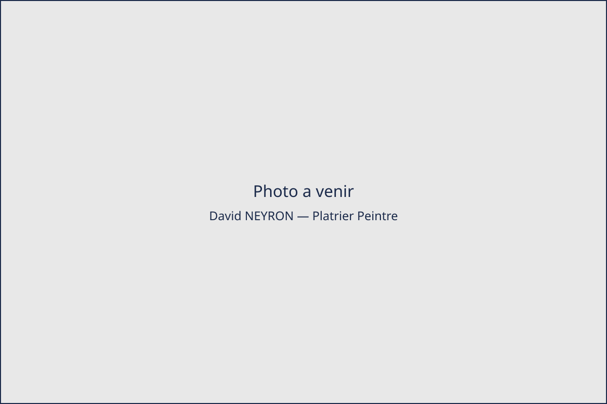

Plâtrier peintre à Saint-Étienne et dans la Loire (42)
David NEYRON, artisan indépendant basé à Firminy, intervient sur Saint-Étienne et tout le bassin stéphanois pour vos travaux de plâtrerie et de peinture intérieure. Conseil, service, qualité — devis gratuit.
Demander un devis gratuit
Pourquoi choisir David NEYRON
- Conseil Un diagnostic clair de vos travaux de plâtrerie et de peinture, avec des recommandations adaptées à votre logement.
- Service Auto-entrepreneur indépendant depuis mars 2021, disponible et réactif sur Saint-Étienne et le bassin stéphanois.
- Qualité Un travail soigné, du ravalement de façade à la peinture intérieure, réalisé par un seul artisan du début à la fin.
Ce que disent les clients
-
« Échange correct et professionnel. Contact sérieux. »
-
« David a été très pro, efficace, rapide en plus d'être très sympathique ! Il m'a donné plein de conseils et aidé à régler d'autres petits soucis autre que dans la cuisine, qui n'étaient pas prévus à la base. Je recommande les yeux fermés ! »
Un projet de plâtrerie ou de peinture ?
Contactez David NEYRON par téléphone ou par mail pour un devis gratuit, sans engagement.
Voir les coordonnées